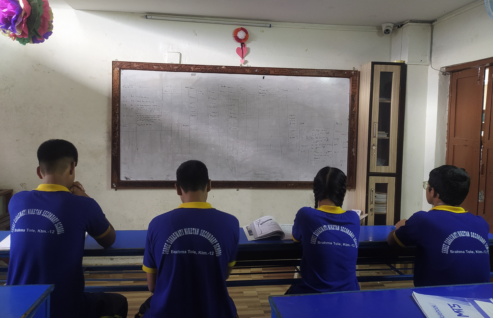
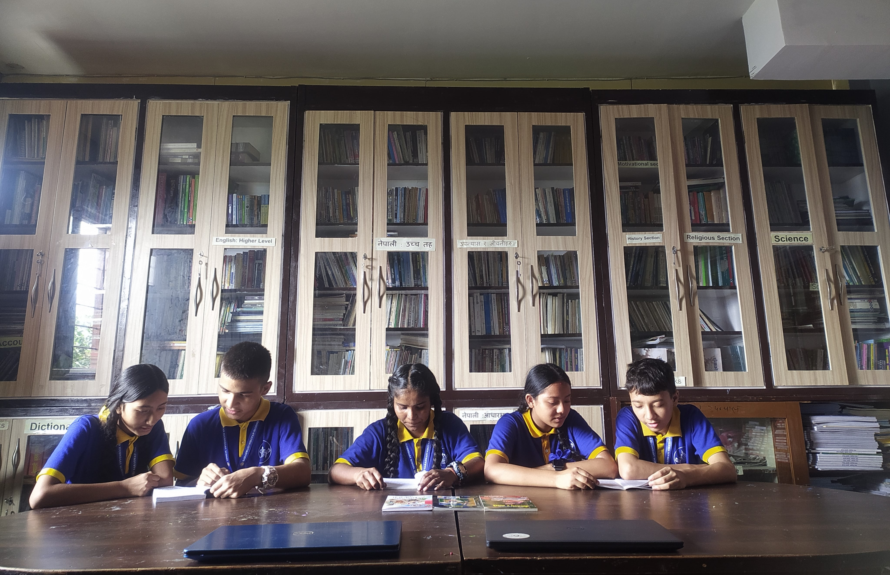
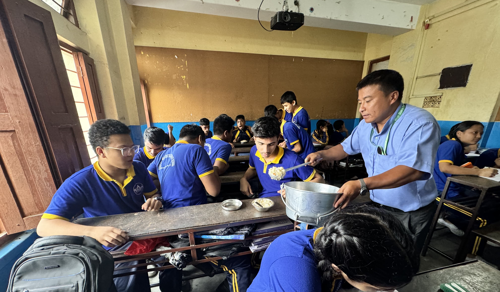
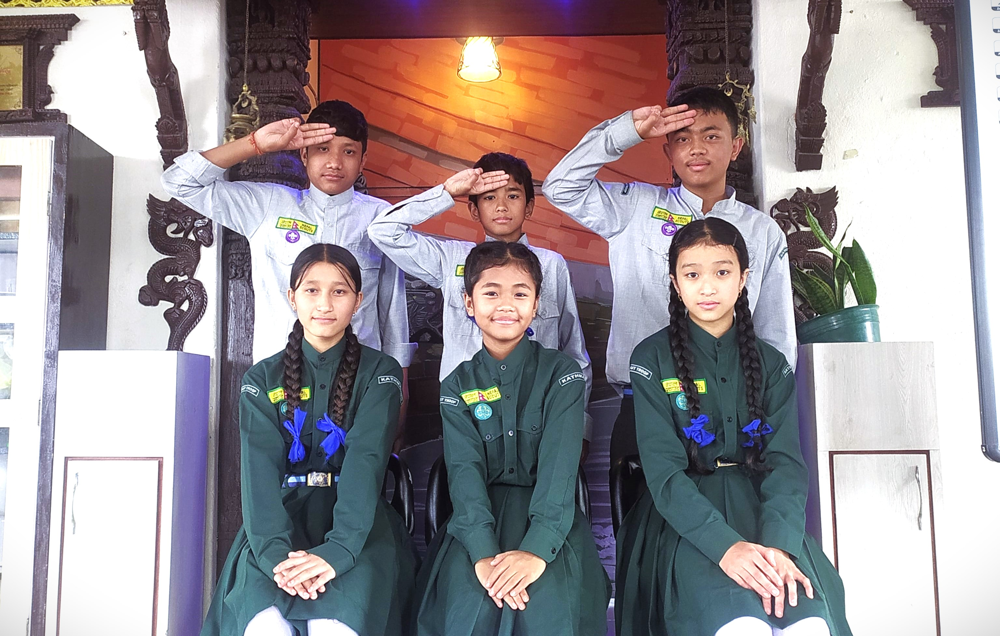

CLASSROOM
A classroom is a designated space for teaching and learning, equipped with essential resources like desks, chairs, a whiteboard or smartboard, and educational materials. It is designed to facilitate instruction, student engagement, and interaction. The layout and decor often aim to create a conducive environment for learning, fostering focus, collaboration, and creativity.

LIBRARY
Our school provides wide range of books including science, literature, famous personalities, economics, commerce, etc. It is a quite and peaceful place to study. Our students shows interests and love to visit the library, read and enjoy books.

FOOD FACILITY
Our school provides lunch for the students from playgroup to grade 10. Food is provided to the students according to the schedule. We provide healthy foods like: fruits, vegetables, milk, biscuits,etc. They are enriched in nutrients for the kids. All the schools should be responsible for student's health.

MAKER SPACE
A makerspace is a room that contains tools and components, allowing an enthusiastic student to enter there withan idea and discover insights to implement the idea. she/he practices critical thinking skills, challenges their imaginations, and come up with solutions for the real-world problems.

COMPUTER LAB
Our school is well equipped with many facilities. One of them is a computer lab with advanced computers. We do many programs in languages like C, C++, HTML, CSS, java, etc. Students from 1st to 12th have opportunities to do programming. It is the space where an entire class can be taught important concepts of computer.

ELECTRONIC LAB
Electronic lab is another sigificant attraction where we construct electronic circuits using analog or digital ICs. The experiments covered in this laboratory are synchronized with its theoritical part so that students might be able to understand its practical part. The laboratory emphasizes to gain hands-on experiences of electronic components.

CHEMISTRY LAB
A chemistry lab is a specialized environment designed for conducting experiments and studying chemical reactions. It typically features workstations equipped with sinks, gas burners, and various glassware such as beakers, flasks, and test tubes. The lab is stocked with chemical, safety equipment like goggles and gloves, and lab coat. It's organized to support hands-on learning and experimentation, with a focus on safety and precision in conducting scientific investigations.

SMART CLASS
A smart classroom is a modern educational space equipped with digital technologies like interactive whiteboards, projectors, and computers. It integrates multimedia resources and digital tools to enhance teaching and learning, enabling interactive lessons, real-time feedback, and access to a wide range of online materials.

Scout
A scout is a member of a youth organization, such as the Boy Scouts or Girl Scouts, focused on personal development, community service, and outdoor skills. Scouts participate in activities like camping, hiking, first aid training, woodcraft, backpacking, and sports. The program emphasizes values such as leadership, teamwork, and citizenship, aiming to build character and prepare young people for responsible roles in society.